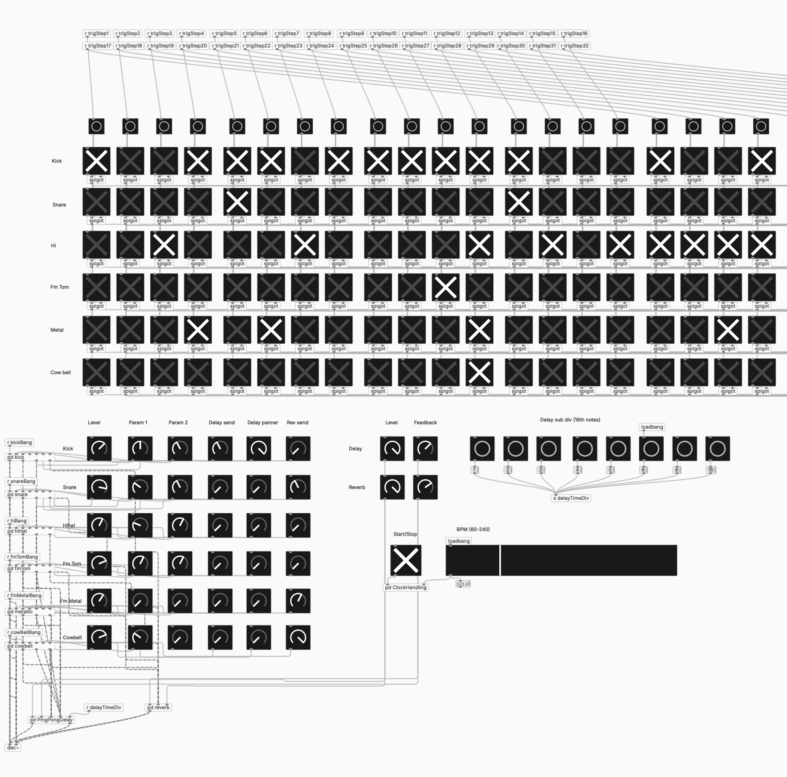
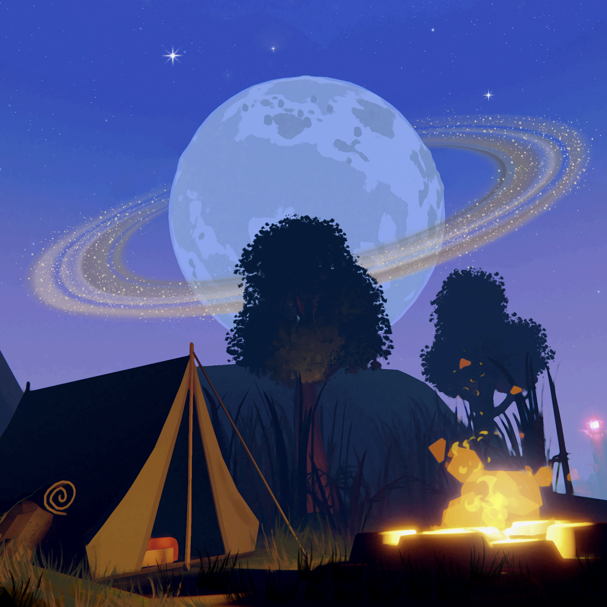
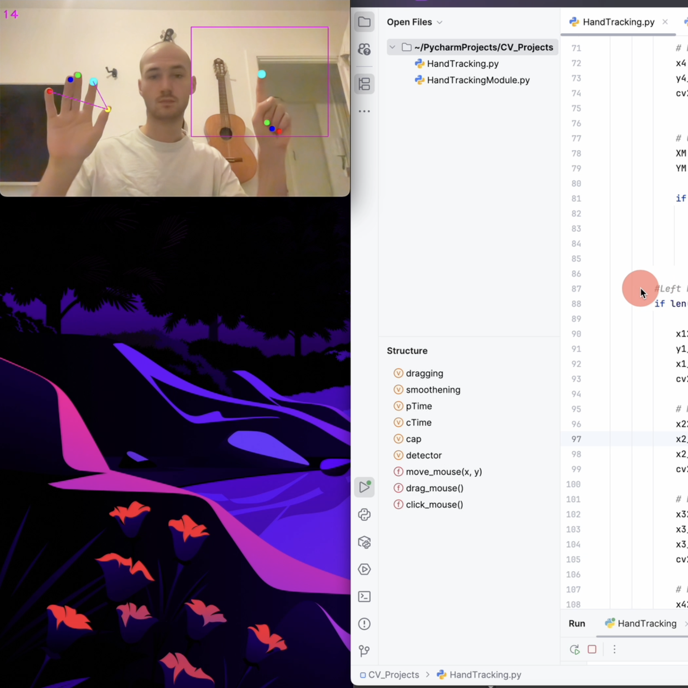
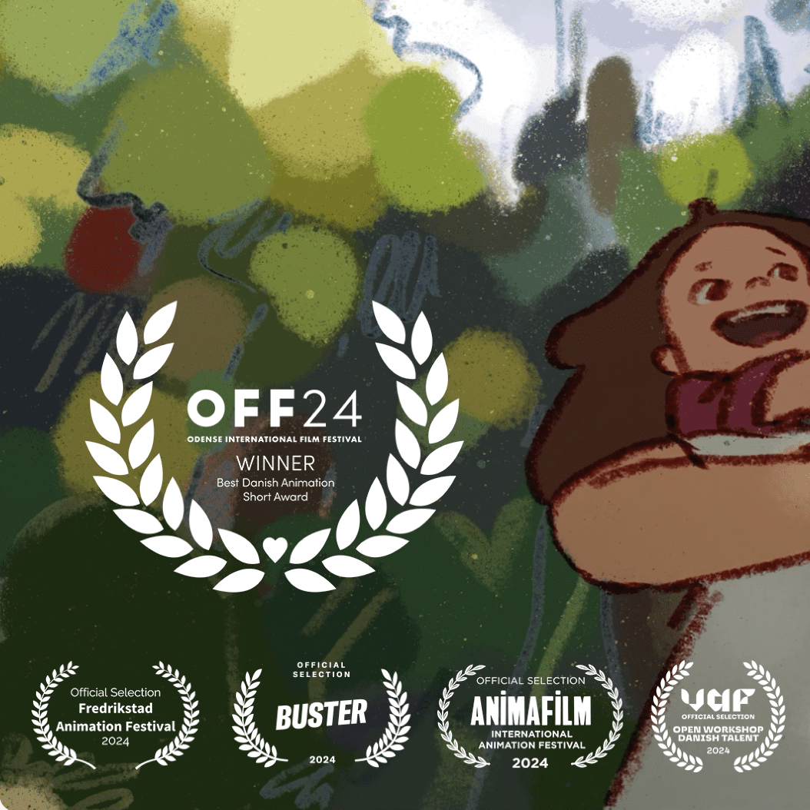
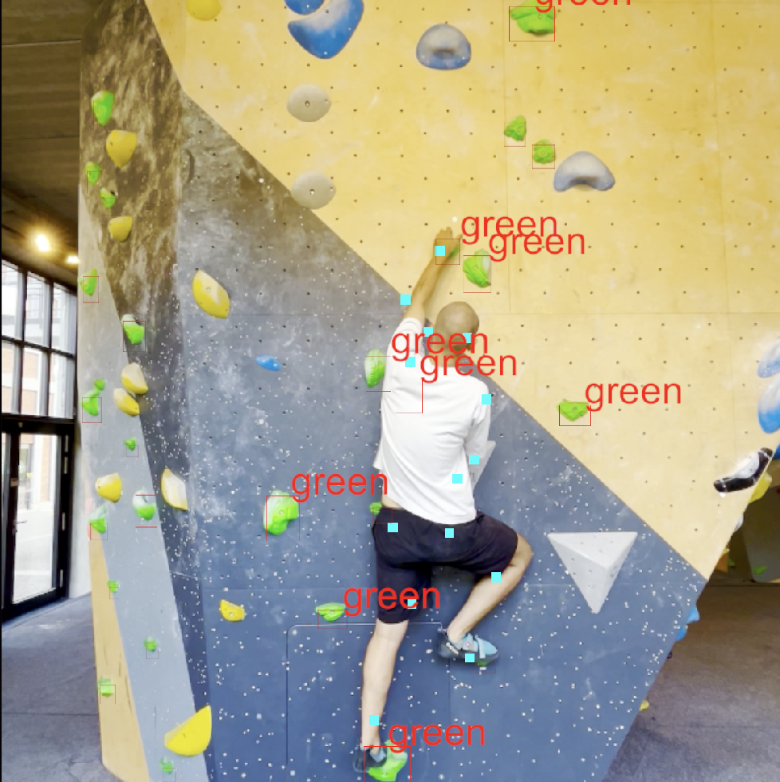

Welcome to my personal webpage! Here you can learn more about me, my projects, and how to contact me.
CAVA-drum 2000 is a digital drum synthesizer and step sequencer developed in PlugData. It generates all sounds in real time using synthesis, combining a programmable rhythm engine with modular instrument design and built-in effects.


A Unity-based 3D exploration game featuring dialogue, vehicle systems, and interactive gameplay mechanics within a small narrative world.
A gesture-controlled interface using computer vision, where hand movements are translated into real-time mouse and system control.


Original music composed for film projects.
Real-time computer vision project built in Unity using YOLO models and a custom dataset trained in Roboflow to detect climbers and handhold interactions.
